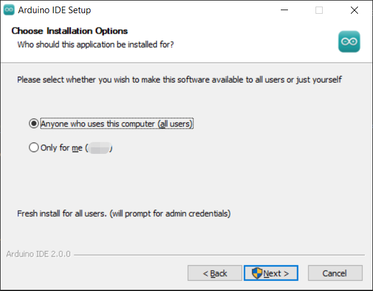
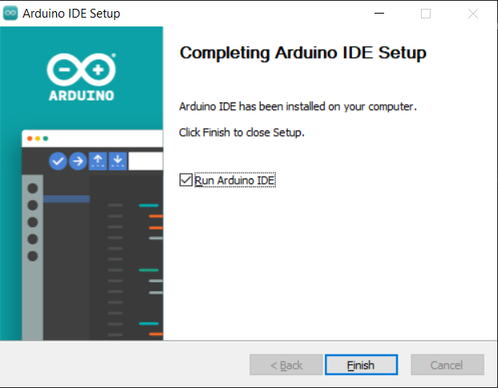
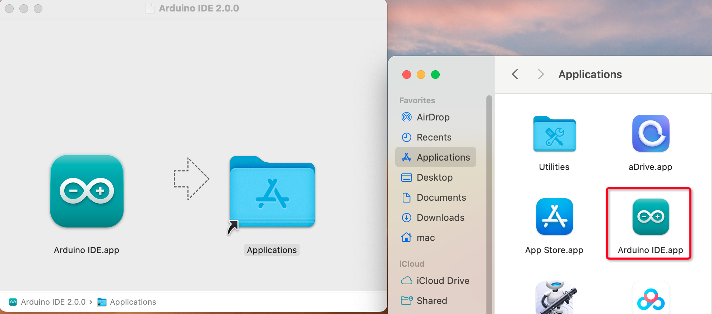
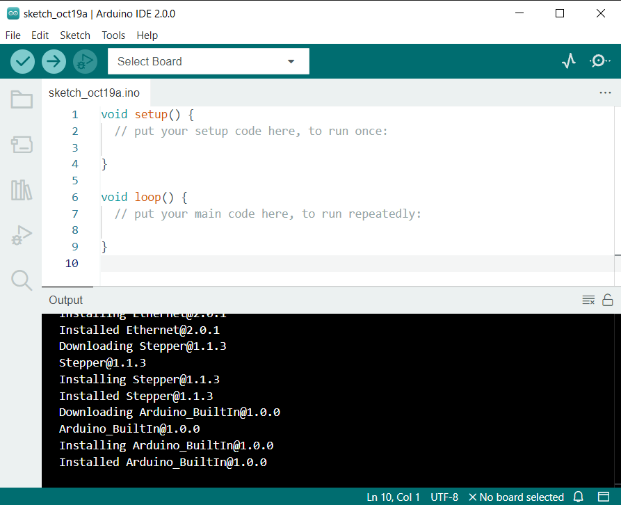

注釈
こんにちは、SunFounderのRaspberry Pi & Arduino & ESP32愛好家コミュニティへようこそ！Facebook上でRaspberry Pi、Arduino、ESP32についてもっと深く掘り下げ、他の愛好家と交流しましょう。
参加する理由は？
エキスパートサポート：コミュニティやチームの助けを借りて、販売後の問題や技術的な課題を解決します。
学び＆共有：ヒントやチュートリアルを交換してスキルを向上させましょう。
独占的なプレビュー：新製品の発表や先行プレビューに早期アクセスしましょう。
特別割引：最新製品の独占割引をお楽しみください。
祭りのプロモーションとギフト：ギフトや祝日のプロモーションに参加しましょう。
👉 私たちと一緒に探索し、創造する準備はできていますか？[ここ]をクリックして今すぐ参加しましょう！
Arduino IDE 2.0のダウンロードとインストール
Arduino IDE（Arduino統合開発環境）は、Arduinoプロジェクトを完成させるために必要なソフトウェアサポートを全て提供します。Arduinoチームが提供するこのプログラミングソフトウェアは、Arduino向けに特別に設計されており、Arduinoボードにプログラムを書き込むための手段を提供しています。
Arduino IDE 2.0はオープンソースプロジェクトであり、堅牢な前バージョンであるArduino IDE 1.xから大きく進化しています。リニューアルされたUI、強化されたボード＆ライブラリマネージャ、デバッガ、オートコンプリート機能など、多くの新機能が搭載されています。
このチュートリアルでは、Windows、Mac、またはLinuxのコンピュータにArduino IDE 2.0をダウンロードしてインストールする方法を解説します。
要件
Windows - Win 10以上、64ビット
Linux - 64ビット
Mac OS X - バージョン10.14「Mojave」以上、64ビット
Arduino IDE 2.0のダウンロード
Arduino IDE 2.0.0 Page にアクセス。
ご利用のOSバージョンに合ったIDEをダウンロードします。

インストール
Windows
ダウンロードした
arduino-ide_xxxx.exeファイルをダブルクリックして実行。ライセンス契約を読み、同意します。

インストールオプションを選択。

インストール先を選択。システムドライブ以外にソフトウェアをインストールすることを推奨します。

インストール完了後、終了します。

macOS
ダウンロードした arduino_ide_xxxx.dmg ファイルをダブルクリックし、指示に従って Arduino IDE.app を Applications フォルダにコピーします。数秒後、Arduino IDEのインストールが正常に完了します。


Linux
LinuxシステムでArduino IDE 2.0をインストールするためのチュートリアルは、 Installing the Arduino IDE 2 - Linux を参照してください。
IDEを開く
Arduino IDE 2.0を初めて開くと、Arduino AVRボード、内蔵ライブラリ、およびその他必要なファイルが自動でインストールされます。

加えて、ファイアウォールやセキュリティセンターが何度かポップアップで表示され、デバイスドライバのインストールを求める場合があります。すべてのドライバをインストールしてください。

これでArduino IDEは使用準備完了です！
注釈
ネットワーク問題やその他の理由で一部のインストールが失敗した場合、Arduino IDEを再開して残りのインストールを完了させることができます。すべてのインストールが完了すると、「Verify」または「Upload」をクリックしない限り、Outputウィンドウは自動で開きません。